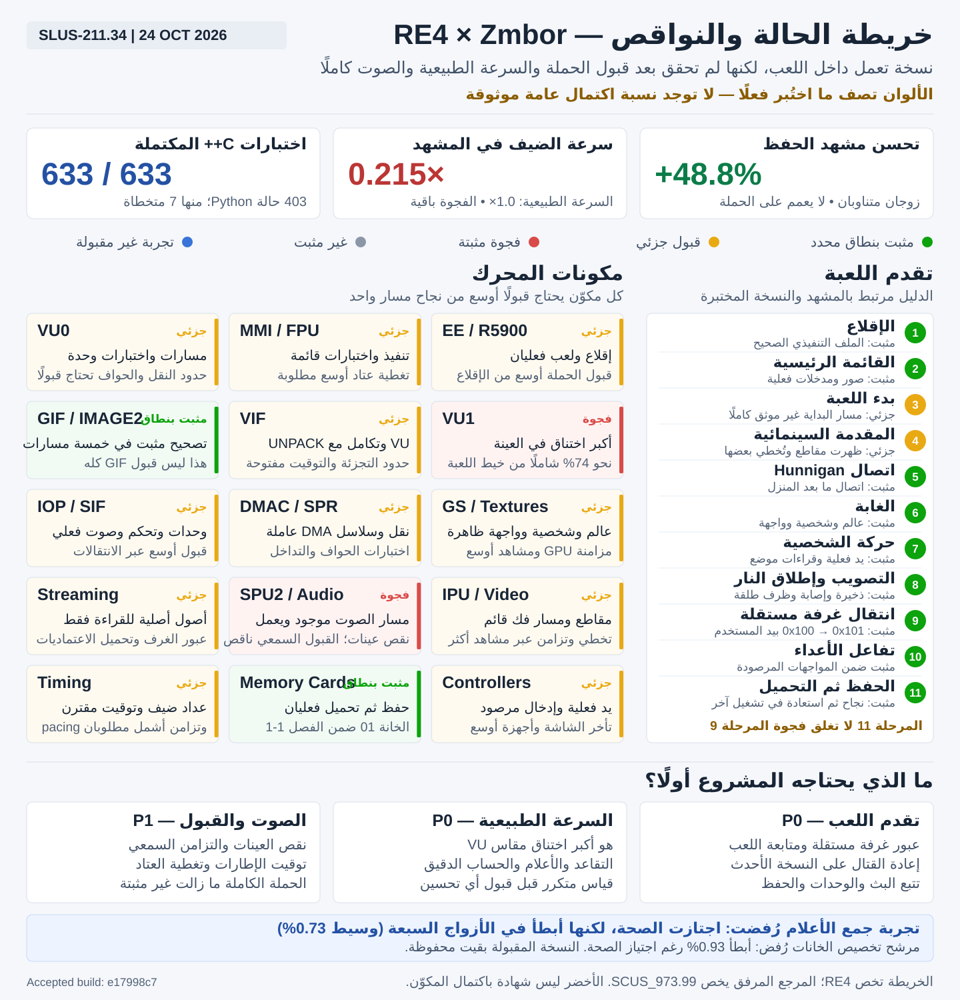

تحديث تنفيذ 24 أكتوبر: رُفض جمع أعلام VU بعد سبعة أزواج أبطأ. وثّق اللعب اليدوي على e17998c7 أول انتقال مستقل 0x100 → 0x101 مع استمرار الحركة والرسم. تفاصيل القيود والاختبارات في NEXT_ENGINEERING_EXECUTION_AR.md؛ أوصاف عدم إثبات الانتقال أدناه تعود إلى المراجعة السابقة.
تقرير حالة وتطوير Resident Evil 4 — Zmbor × Project-4

تاريخ المراجعة: 24 أكتوبر 2026
النسخة: Resident Evil 4 USA — SLUS-211.34
النطاق: المختبر المعزول ونتائج التشغيل المسجلة، وليس شهادة باكتمال اللعبة.
1. الحكم الحالي
المشروع تجاوز الإقلاع والقائمة: توجد نسخة أصلية الترجمة تعمل داخل اللعب، وظهر فيها Leon والعالم والواجهة، ووُثقت الحركة والتصويب وإطلاق النار والمواجهة الأولى وأعداء خارج المنزل، ثم الحفظ والتحميل. لذلك لا يحتاج المشروع إلى إعادة بنائه من الصفر أو الرجوع إلى أول مرحلة إقلاع.
لكنه ليس جاهزًا بعد للقول إن الحملة كاملة تعمل بسرعة طبيعية وبصوت ورسوم صحيحين في جميع المشاهد. أكبر فجوة مثبتة هي الأداء: سرعة الضيف في مشهد الحفظ المقاس نحو 0.215× من الزمن الحقيقي، رغم تحسنها المتكرر بنحو 48.8% مقارنةً بالنسخة السابقة في المشهد نفسه. انتقال غرفة مستقلة لم يُثبت بعد، كما لم يُستكمل قبول الصوت والتزامن وتغطية العتاد على مشغّل RE4 الجديد.
القرار المناسب هو الإبقاء على النسخة العاملة كمرجع، وتحسين الاختناقات المقاسة على دفعات صغيرة قابلة للرجوع، مع ربط كل ادعاء باختبار فعلي.
2. كيف نقرأ الخريطة؟ ولماذا لا نكتب 100%؟
ملف map.svg المرفق يخص عنوانًا آخر برقم SCUS_973.99، وليس RE4. يذكر 647 دالة من مكتبات Sony المرتبطة بذلك العنوان، ويستخدم أوزانًا للمكونات. لا يجوز نقل أعداده أو ألوانه أو نسبة 100% إلى SLUS-211.34.
الخريطة الجديدة تستلهم تقسيم المكونات من المرجع، لكنها تعرض حالة الدليل:
| اللون | المقصود | ما لا يعنيه |
|---|---|---|
| أخضر | اجتاز نطاق تحقق محدد ومذكور | اكتمال المكوّن أو الحملة كلها |
| أصفر | توجد وظيفة عاملة أو اختبارات، والقبول جزئي | أن كل الحالات صحيحة |
| أحمر | توجد فجوة مثبتة، مثل البطء أو نقص عينات الصوت | أن المكوّن غير منفذ بالكامل |
| رمادي | غير مثبت أو غير مقاس بعد | أنه مفقود من الشفرة أو أنه فشل |
| أزرق | تجربة هندسية غير مقبولة بعد | تحسين منجز أو نسخة صالحة للإصدار |
لا توجد نسبة اكتمال عامة موثوقة للمشروع. عدد الدوال المترجمة، أو عدد الوحدات، أو اجتياز اختبارات الوحدة لا يقيس وحده اكتمال الحملة.
3. ما الذي ثبت داخل اللعبة؟
| المرحلة | الحالة | الدليل وحدوده |
|---|---|---|
| الإقلاع | مثبت | تشغيل الملف التنفيذي الصحيح وظهور شاشات البداية |
| القائمة الرئيسية | مثبت | صور فعلية للقائمة واستهلاك مدخلات التحكم |
| بدء لعبة | جزئي | بدأت جلسات لعب فعلية للفصل 1-1؛ لم يُوثق مسار كل خيارات البداية كاختبار قبول مستقل |
| المقدمة السينمائية | جزئي | ظهرت مقاطع وبدايات سينمائية، وتُخطي بعضها؛ لا قبول شامل لكل المقدمة |
| Hunnigan | مثبت ضمن نطاق | اتصال ما بعد مواجهة المنزل ظاهر؛ لا يُستبدل به توثيق كل اتصالات الحملة |
| الغابة | مثبت | Leon والسلاح والواجهة والعالم ظاهرون في التشغيل الفعلي |
| الحركة | مثبت | صور وقراءات موضع، وحركة فعلية بيد المستخدم، ثم حركة على النسخة المحسّنة |
| التصويب وإطلاق النار | مثبت | تغير الذخيرة، ومضة/ظرف طلقة، وآثار إصابة ظاهرة |
| انتقال غرفة مستقلة | غير مثبت | الدخول إلى المنزل والخروج منه لا يكفيان؛ القراءات المرصودة بقيت في المنطقة 0x100 |
| تفاعل الأعداء | مثبت ضمن نطاق | رفع الفأس، رد فعل الإصابة، مشهد ما بعد المواجهة، وأعداء خارج المنزل |
| الحفظ ثم التحميل | مثبت ضمن نطاق | Save Successful في الخانة 01، ثم Load Successful في عملية مستقلة، والعودة إلى الآلة الكاتبة بذخيرة 05 |
أعلى مرحلة مرقمة مثبتة هي 11، لكن ذلك لا يعني أن كل مرحلة سابقة أُغلقت دون فجوات؛ المرحلة 9 ما زالت مفتوحة.
دليل القتال اليدوي يعود إلى النسخة المدمجة السابقة. النسخة المقبولة الأحدث اجتازت تحقق VU المباشر، والتحميل، والحركة، ومشهد المقارنة. لم يُعد عليها مسار القتال الكامل نفسه بعد، ولذلك لا نخلط بين النسختين في مستوى قبول اللعب.
4. هوية اللعبة وملفاتها
الملف التنفيذي الحقيقي اكتُشف من SYSTEM.CNF، وهو SLUS_211.34، وليس اسمًا افتراضيًا. بصمته تطابق ملف Project-4 المرجعي:
465d144f526603d0dcc35ad1fdb4e82cc3a1481c22289f321482cc910fb9f1ad
هو ELF32، صغير النهاية، بمعمارية MIPS، ونقطة دخوله 0x00100008. توجد 107 أقسام، دون رموز SYMTAB/DYNSYM. مجال PT_LOAD هو [0x00100000, 0x004A0A58).
ذيل التصفير في المقطع 879,408 بايت؛ قسم .bss نفسه 879,192 بايت، وبين نهاية البيانات وبدايته 216 بايت محاذاة. هذا فرق في تعريف القياس، وليس اختلاف مراجعة للعبة. حقل VER=1.01 في ملف الإقلاع لا يثبت وحده مراجعة تصنيع مستقلة؛ البصمة هي دليل التطابق الأقوى هنا.
| الموجود | ما كشفه الفحص |
|---|---|
| صورة القرص | ISO9660 بحجم 4,435,836,928 بايت |
| النسخة المستخرجة | الملفات التشغيلية الثمانية طابقت نظائرها داخل ISO بايتًا ببايت عبر البصمات |
| ملفات ELF المضمنة | الأساسي، و16 داخل IOPRP، و7 داخل MODULES.DAT |
| الوحدات الديناميكية | 195 وحدة SNR2 داخل أرشيف بيانات اللعبة |
| اعتماديات IOP | جرد للوحدات وجداول الاستيراد والتصدير، بما يشمل التحكم والصوت والبطاقات |
| الأرشيفات | فهارس AFS الثلاثة، مع الإزاحات والأحجام والعلاقات المتاحة |
| الصوت والفيديو | 244 موردًا بتوقيع ADX و169 موردًا بتوقيع MPEG-PS ضمن الجرد المسجل |
| الموارد الأخرى | قوائم موارد وامتدادات للقوام والهندسة والأحداث وغيرها؛ ليست كل الحاويات المضغوطة مفكوكة أو موثقة |
الناقص هنا ليس العثور على ELF أو تنزيل اللعبة أو BIOS. الملفات الأساسية موجودة ومثبتة. ما بقي هو استكمال معرفة بعض الصيغ والاعتماديات عند الحاجة إلى تشخيص مشهد أو انتقال جديد، مع عدم اعتبار الامتداد وحده إثباتًا للصيغة.
5. حالة المكونات وما ينقص كل واحد
| المكوّن | الموجود فعليًا | الناقص أو بوابة القبول التالية |
|---|---|---|
| R5900 / EE | ترجمة C++ قائمة وتشغيل لعب فعلي، مع إصلاحات سابقة للفروع والاستدعاءات | تغطية مسارات الغرف والحملة، والتحقق من أي مدخل ناقص من أثر فعلي |
| MMI | تطبيقات واختبارات وتعليمات عاملة ضمن المسار الحالي | متجهات عتاد أوسع قبل نقل تحسينات مختلفة من Zmbor |
| FPU | معالجة للفواصل العائمة وأعلامها ومسارات ترجمة مستقلة | قبول الحواف والتقريب والاستثناءات على النسخة الجديدة؛ لا نقل شامل دون دليل |
| VU0 | بنية واختبارات مشتركة مع وحدات المتجهات | تحقق عتاد ولعب أوسع، خصوصًا النقل والحالات الطرفية |
| VU1 | كتل متخصصة ودمج فحوص الجاهزية، وإعادة أوامر وميزانيات واستئناف | أكبر اختناق مقاس؛ تقاعد النتائج والأعلام والحساب الدقيق ما زالت مكلفة |
| VIF | فك UNPACK ومسار سريع وتكامل مع VU | مزيد من حدود التجزئة والتوقف والتوقيت تحت مشاهد متعددة |
| GIF | تحكيم المسارات وتصحيح IMAGE2 في خمسة مواقع | قبول أوسع للتداخل وترتيب الأحداث، لا الاكتفاء بتصحيح نوع حزمة واحد |
| GS والقوام | عالم وشخصية وواجهة فعلية عبر parallel-gs | مراجعة مشاهد إضافية، وفصل كلفة المزامنة عن الرسم، وقياس توقيت الإطارات |
| DMAC / SPR | سلاسل نقل ومسارات DMA قائمة | متجهات حواف وتداخل وSPR على مشغّل المرشح، دون تكرار إصلاح موجود |
| IOP / SIF | IOP حقيقي ووحدات اللعبة وصوت وتحكم، مع تحسينات سابقة | المحافظة على ترتيب RPC والجدولة عبر الانتقالات؛ لا استبداله بمستجيب اختبارات |
| IPU والفيديو | تشغيل مقاطع وبنية فك فيديو قائمة | فحص المقاطع والتخطي والتزامن عبر مراحل أكثر |
| SPU2 والصوت | مسار صوت فعلي؛ عدادات طلب وتسليم ونقص عينات | النقص موجود، والقبول السمعي وAV sync غير مكتملين |
| بث الملفات | قراءة الأصول الأصلية عبر مسار للقراءة فقط وفهارس أرشيفات | إثبات انتقال غرف وتسجيل طلبات الوحدات والموارد عند أول إخفاق |
| التحكم | يد فعلية واختبارات وإعادة إدخال ومراقبة استهلاك | تأخر اليد إلى الشاشة، وإعادة الاتصال والاهتزاز وتغطية أجهزة أوسع |
| بطاقات الذاكرة | حفظ وتحميل فعليان على بطاقة مختبر منفصلة | اختبارات دورات حفظ متعددة، وحالات الانقطاع والاسترداد عبر غرف ومراحل أكثر |
| التوقيت والجدولة | عدادات ضيف وتوقيت رتيب وقياس سرعة مقترن | الوصول للزمن الحقيقي، وقياس p95/p99 لكل إطار، ومنع كسب وهمي بتقليل دورات العتاد |
6. ما الذي اندمج وما الذي لم يندمج؟
تغييرات مقبولة في المختبر
- تصحيح IMAGE2: نُقل تصحيح ضيق من Zmbor/upstream إلى خمسة مواضع في GIF/GS/VIF/XGKICK. فشلت الاختبارات الأربعة المضافة قبل التصحيح ونجحت بعده. هو إصلاح صحة عام؛ لم يثبت أن مشهد القياس يستخدم IMAGE2، فلا تُنسب إليه زيادة سرعة اللعبة.
- إعادة استخدام مرشح VU موجود: أُعيد توليده حرفيًا من مدخلاته، ثم اختُبر، بدل إعادة اختراع ما أنجزه المشروع السابق. المقارنة المعزولة القديمة شملت دمج الفحوص وتوسعة الكتل معًا؛ لا تعزل أثر كل جزء.
- توسعة المناطق المتطابقة: أُعيد استخدام 87 جسم كتلة عبر ثلاث صور VU، لتصبح التغطية 261 كتلة. تطابقت هوية التعليمات وبيانات الأعلام والجدولة في المناطق المشتركة، وبقيت المداخل خارجها على جدول كل صورة الأصلي. لم تتغير حسابات FMAC أو تواقيت الأجهزة بسبب هذه التوسعة.
لم نستبدل المحركين كاملين، ولم نلغِ IOP أو الصوت العاملين، ولم نكتب في إحداثيات اللاعب أو أعلام العدو لتجاوز مشهد.
تجارب غير مقبولة
| التجربة | النتيجة | القرار |
|---|---|---|
| توسيع مساعد تخصيص الخانات إلى الأعلام وEFU والتخزين | اجتاز الصحة، لكنه أبطأ في الأزواج السبعة؛ وسيط تراجع الكلفة 0.93% | رُفض وأُعيد المصدر قبل التجربة؛ المشغّل المقبول لم يتغير |
| جمع خانات الأعلام التي أصبحت بلا أثر، مع إبقاء آخر موعد استحقاق | بُني واجتاز الصحة، لكنه أبطأ في الأزواج السبعة؛ وسيط تراجع الكلفة 0.73% | رُفض وأُعيد المصدر السابق؛ لم يتغير المشغّل المقبول |
هناك فرق مهم بين المشغّل المقبول وبين المصدر التجريبي الجاري. المشغّل المقبول في lab/shared-link ببصمة تبدأ بـe17998c7. الفرع الجاري compat/re4-vu-flag-coalescing حُفظت عليه التجربة المرفوضة كأثر مستقل ثم أُعيد ملف المصدر السابق حرفيًا؛ اسم الفرع وحده لا يحدد شفرة المشغّل المبني. مشغّل المستخدم في المختبر ما زال يشير إلى النسخة المقبولة.
7. الأداء: ماذا تحسن، وما حجم الفجوة؟
| القياس | قبل | بعد | الاستنتاج الصحيح |
|---|---|---|---|
| مشهد الحفظ، الزوج الأول | 0.144531× | 0.214977× | زيادة سرعة 48.741% |
| المشهد نفسه، بترتيب معكوس | 0.143895× | 0.214255× | زيادة سرعة 48.897% |
| وسيط الزوجين | 0.144213× | 0.214616× | تحسن متكرر نحو 48.819% في هذا المشهد |
| حمل لقطات VU للصورتين المضافتين | مرجع مطابق | كلفة أقل نحو 10.9% | حمل معزول يشمل حساب بصمة GIF، وليس FPS |
| مرشح تخصيص الخانات الأخير | 18.527 ns/cycle | 18.690 ns/cycle | أبطأ؛ لا يدمج |
في مقارنة اللعب استخدمت الجولات البطاقة وشريط الإدخال وELF والإعدادات وملفات DLL نفسها. كان الترتيب مرجع/مرشح ثم مرشح/مرجع، ونافذة الضيف EE3300..3900. لم يعمل profiler أو قارئ RAM أثناء التوقيت، وحدود عدم يقين أخذ العينات لا تتداخل بين النسختين. هذه الحدود ليست فاصل ثقة إحصائيًا عامًا.
لا تجمع النسب المختلفة ولا تعممها على الحملة. تحسن 48.8% لا يعني الوصول إلى السرعة الطبيعية. للوصول من 0.2146× إلى 1.0× في المشهد نفسه يلزم معدل تنفيذ إضافي يقارب 4.66 أضعاف المعدل الحالي، بافتراض بقاء عبء المشهد نفسه. هذا حساب للفجوة، وليس وعدًا بأن تحسينًا واحدًا سيحققها.
العينة الأحدث على النسخة المقبولة: 1,677 عينة خلال عشر ثوانٍ. ظهر VU.run بنحو 73.7% شاملًا من عينة خيط اللعبة، وcommitReadyPipelines بنحو 11.57% زمنًا ذاتيًا، وupdateFmacFlags بنحو 4.41%، وnormalizeFmacResult بنحو 4.35%. النسب الشاملة متداخلة ولا تُجمع.
التركيز الأول ينبغي أن يكون على كلفة VU المثبتة، وليس تغيير العتاد أو تبديل المحرك كاملًا دون قياس. بعد كل تخفيض للكلفة يجب إعادة أخذ العينة، لأن ترتيب الاختناقات يتغير.
8. الصوت والتحكم والرسوم
الصوت: المسار ليس مفقودًا، لكن جودة التوقيت غير مقبولة بعد ككل. في جلسة المستخدم بلغ عداد النقص 543,427 عينة من 31,920,000 مطلوبة. في جولات مشهد الحفظ كان النقص أقل مع المرشح، لكن ذلك لا يثبت جودة الحوار أو سلامة التزامن السمعي البصري، ولا يعزل السبب عن بطء الضيف.
التحكم: طابقت 1,985 حالة متغيرة بين نشر حالة المضيف واستهلاكها داخل native PAD. الوسيط 13 ملّي ثانية، وp95 نحو 121 ملّي ثانية، والأقصى 240 ملّي ثانية. هذا تأخر برمجي بين نقطتي رصد، وليس قياسًا من إصبع المستخدم إلى ظهور الاستجابة على الشاشة.
الرسوم: راجعنا المشهد المقابل قرب EE3600 في الجولات الأربع، مع Leon والآلة الكاتبة والذخيرة والعنصر على الطاولة. فحص 433 ملف PNG من اللعب لم يجد ملفًا أسود بالكامل. ظهرت إحدى الصور سوداء عند عرضها أول مرة في الأداة، لكن الملف نفسه ظهر صحيحًا عند إعادة قراءته وبصمته مطابقة للقطة المرشح الأخرى. لا توجد من ذلك شهادة بسلامة كل القوام والإضاءة والشفافية والرسوم عبر الحملة.
9. قوة الاختبارات وحدودها
| حزمة الدليل | آخر نتيجة مكتملة | الحد |
|---|---|---|
| اختبارات C++ للدمج | 633/633 | ليست اختبار حملة كاملة |
| Python الخاص بـProject-4 | 403 حالة دون أخطاء، منها 7 متخطاة | لا تُحسب المتخطاة نجاحًا منفذًا |
| أدوات المختبر | 12/12 | تخص الأدوات والحماية والتحقق المحدد |
| محدد الخانات | 394,260 مقارنة ناجحة | المرشح الذي استخدمه رُفض للأداء رغم الصحة |
| إعادة أوامر فعلية | 964 أمرًا | تغطي صورة VU محددة؛ لا تستبدل بقية الصور |
| الأوامر الحدية | 2,860 أمرًا | ميزانيات صغيرة واستئناف وحواف محددة |
| صور VU المضافتان | 16 لقطة فعلية لكل صورة، و13 ميزانية مع الاستئناف | قبول معزول للحالة والدورات وGIF |
| اختبارات Zmbor المرجعية | 520/520، وIOP 4/4 | مرجع منفصل عن مشغّل RE4 المرشح |
| IOP الخاص بـProject-4 | 5/5 | لا يغطي كل سيناريوهات الصوت والبث |
| مصفوفة عتاد Zmbor الموجودة | 47 من 55 مطابقة؛ 8 غير مطابقة | ليست نتيجة عتاد كاملة على مشغّل RE4 الجديد |
الاختلافات الثمانية المرجعية لم تُصلح في هذه الدفعات ولم تُخفَ. تشمل مجموعات للفروع وCOP0 وFPU ونقل VU0 والذاكرة وEFU. لا يصح نسبها إلى مرشح RE4 الجديد، كما لا يصح الادعاء بأن بوابة العتاد كلها اجتازت.
10. ما يحتاجه المشروع ليصبح أفضل؟
أولوية حاسمة: توسيع قبول اللعب والصحة
- عبور حد غرفة مستقل بمدخلات موثقة، ثم التحقق من تحميل الوحدات والموارد واستمرار الرسم والتحكم والصوت.
- حفظ في أكثر من مرحلة، وإغلاق العملية، ثم تحميل البطاقة نفسها والتحقق من الموضع والتقدم والمخزون.
- إعادة مسار القتال على المشغّل المقبول الأحدث، ثم أعداء وتفاعلات وغرف أخرى؛ الدليل الحالي لا يغطي الحملة كلها.
- عند فشل انتقال، تسجيل أول مورد أو وحدة أو هدف تنفيذ أو انتظار عتاد مسؤول؛ لا افتراض أن الجدار أو قيد المسار الآلي عيب محرك.
أولوية حاسمة: السرعة الطبيعية دون تغيير سلوك PS2
- اكتمل اختبار مرشح جمع الأعلام ورُفض لتباطئه. شروط أي محاولة لاحقة: الحفاظ على MAC/STATUS/sticky/CLIP، وترتيب الاستحقاق، ودورات E/Continue والميزانيات الصغيرة. الاحتفاظ بآخر موعد استحقاق شرط أساسي.
- قياس سبعة أزواج متناوبة على الأقل للحمل المعزول، ثم مشاهد لعب مطابقة قبل القبول. إذا لم يثبت المكسب يُرفض، كما حدث لمرشح التخصيص.
- توسيع القياس إلى الحركة والقتال والانتقالات، لا المشهد الساكن فقط.
- قياس pacing لكل إطار ووقت انتظار GPU وكلفة EE/IOP منفصلة بما يكفي لتحديد الاختناق التالي.
أولوية عالية: الصوت والتزامن
- ربط نقص العينات بزمن الضيف وسعة الطوابير وجدولة IOP، وفصل نقص التغذية عن خلل فك الصوت أو SPU2.
- التحقق السمعي من الحوار والموسيقى والمؤثرات والمقاطع والتخطي، وقياس AV sync عبر أكثر من مشهد.
- اختبار الانقطاع والتوقف المؤقت والتحميل والانتقال دون فقد صوت أو تراكم تأخير.
أولوية عالية: منع التراجعات
- تثبيت مجموعة مشاهد وحفظ ومدخلات مرجعية، مع بصمات للمشغّل والأصول والبطاقة والإعدادات.
- إضافة حالة محددة لكل إصلاح، وإبقاء الأدلة المعزولة والعتاد واللعب منفصلة.
- تشغيل الاختبارات المناسبة من Zmbor وProject-4 على المرشح الفعلي؛ لا الاكتفاء بنتيجة مستودع مرجعي آخر.
- عدم تعميم إصلاحات FPU/MMI/DMAC أو دمج فروع متباعدة دون متجهات واختبارات أثر.
أولوية لاحقة: الأدوات والتسليم
- تحسين تتبع مسار الملفات والوحدات الديناميكية ومواضع الغرف وربط الإزاحات بمصادرها.
- مسار تنقل قابل للتكرار يلتف حول العوائق بدل الوصلات المستقيمة غير المثبتة.
- تقليل زمن دورة البناء دون تنظيفه أو إعادة ترجمة آلاف ملفات EE بلا حاجة، مع إعادة استخدام كائنات محققة البصمة.
- إدارة بطاقات مختبر واستعادة واضحة بعد الانقطاع، وسجل إصدار يعرف أي مصدر بنى كل ملف تنفيذي.
- توزيع الشفرة والأدوات المسموح بها فقط؛ تبقى أصول اللعبة والملفات التنفيذية الأصلية والكود المشتق منها خارج النشر.
11. خطة تنفيذ مقترحة ببوابات قبول
| الدفعة | التنفيذ | متى تُعد ناجحة؟ |
|---|---|---|
| تثبيت المرجع | حفظ المشغّل المقبول وبصماته والبطاقة ومدخلات المشهد | يمكن إعادة المشهد نفسه دون لمس الأصل |
| مرشح الأعلام | اكتمل البناء والصحة والقياس | رُفض: أبطأ في الأزواج السبعة؛ الأصل محفوظ |
| قياس المرشح | أزواج متناوبة معزولة ثم مشاهد لعب مطابقة | مكسب متكرر لا يفسره خطأ عينة أو اختلاف إعدادات |
| تقدم الغرف | مسار حقيقي عبر البوابة وتسجيل البث والوحدات | تغير غرفة موثق واستمرار اللعب والتحميل والحفظ |
| الصوت والتوقيت | قياس وتشخيص واختبار سمعي عبر مشاهد متعددة | غياب خلل مسموع أو انجراف تزامن في نطاق الاختبار المحدد |
| توسيع القبول | عدة غرف وأعداء وحالات حفظ/تحميل وإعادة تشغيل | لا تراجع مقابل مجموعة المشاهد المرجعية |
| إصدار خاص موثوق | مشغّل معروف المصدر مع رجوع وحفظ معزول | قابلية إعادة الاختبار والاسترداد دون فقد بيانات المستخدم |
لا أضع تقديرات زمنية أو نسبة اكتمال للحملة دون خطة تغطية مفصلة ونتائج تشغيل. الأولوية العملية الآن: تخفيض كلفة VU المثبتة، وإغلاق فجوة انتقال الغرف، ثم قبول الصوت والتوقيت على مشاهد متعددة.
12. ما لا يحتاجه المشروع الآن
- لا يحتاج إلى تنزيل اللعبة أو BIOS، ولا إلى سؤال جديد عن مكان ELF.
- لا يحتاج إلى استبدال Project-4 أو Zmbor كاملين؛ توجد أجزاء عاملة ينبغي الحفاظ عليها.
- لا يحتاج إلى تعديل ملفات EE المولدة يدويًا أو تجاوز الأعداء بكتابة الذاكرة.
- لا يحتاج إلى نسبة 100% شكلية؛ يحتاج إلى نطاقات قبول واضحة وأدلة قابلة لإعادة الاختبار.
- لا يوجد دليل كافٍ لاتخاذ شراء عتاد جديد بديلًا عن معالجة الاختناق البرمجي المقاس.
13. المراجع المحلية والتسليم
التقارير التفصيلية السابقة: RE4_DISCOVERY.md، GAME_FILE_MAP.md، ENGINE_COMPARISON.md، RE4_COMPATIBILITY.md، PERFORMANCE_BASELINE.md، INTEGRATION_PLAN.md.
أهم أدلة هذه المراجعة داخل المختبر:
artifacts/discovery/— الهوية والفهارس وبصمات ملفات القرص.artifacts/experiments/vu-shared-regions/game-comparison-summary.json— المقارنتان الفعليتان.artifacts/experiments/vu-shared-regions/validation-v2/summary.json— الحالة والدورات وGIF.artifacts/runs/manual-play-02/— اللعب اليدوي والحفظ.artifacts/runs/saved-load-03/load-success-evidence.json— التحميل المستقل.artifacts/runs/regions-route/navigation-evidence.json— حدود اختبار التنقل.artifacts/runs/core-profile-01/host-profile.txt— عينة الاختناق الحالية.artifacts/experiments/vu-queue-allocation/decision.json— المرشح المرفوض.artifacts/experiments/vu-flag-coalescing/integration.json— هوية المصدر التجريبي؛ القرار النهائي في decision.json (مرفوض).
كل التطوير والمخرجات وبطاقات الاختبار بقيت داخل المختبر. فُحصت 713 نسخة من ملفات المصدر الأصلية دون تغييرات مرصودة في آخر فحص. لم تُنشر أصول أو ملفات لعبة أو شفرة مشتقة، ولم يحدث push. التقرير والخريطة يعرضان معلومات هندسية ونتائج تحقق، لا محتويات اللعبة المحمية.